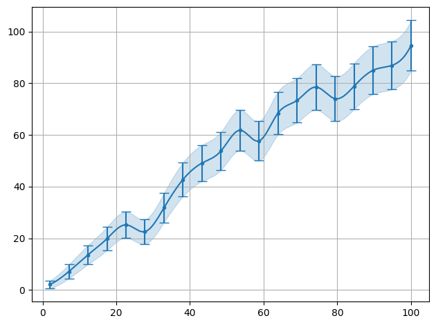
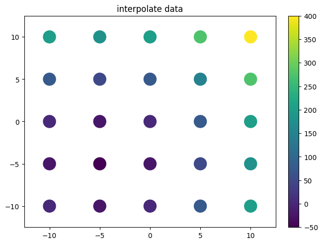
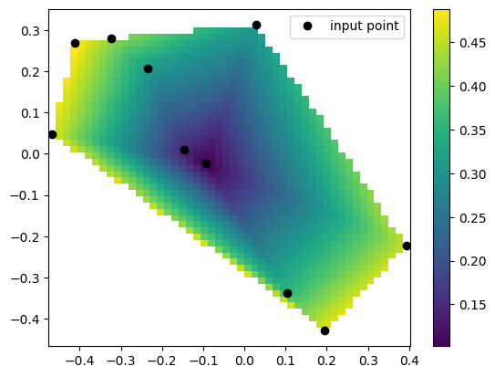
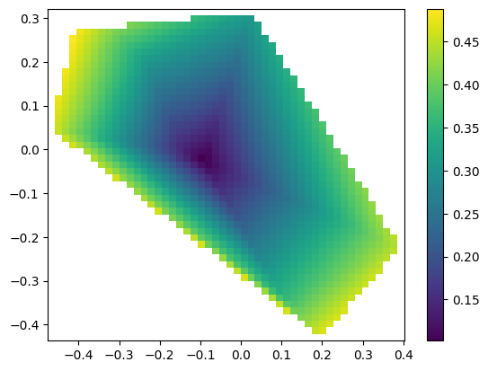
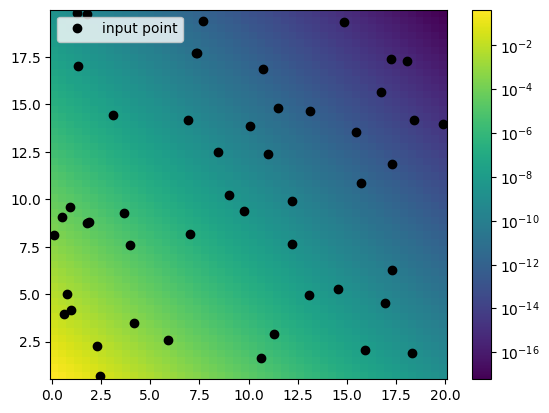
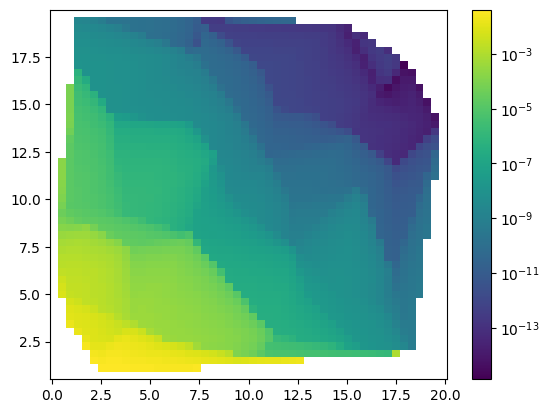

Interpolate
[1]:
from smpl import plot
from smpl import stat
from smpl import data
from smpl import interpolate
import numpy as np
from smpl import interpolate as interp
from uncertainties import unumpy as unp
Interpolate 1d
[2]:
x = np.linspace(2,100,20)
y = stat.noisy(x)
plot.data(x,y,interpolate=True)
plot.show()
plot.data(x,y,interpolate=True,also_data=False)
plot.show()


[3]:
x = np.linspace(2,100,20)
y = stat.poisson_dist(stat.noisy(x))
plot.data(x,y,interpolate=True,sigmas=1,show=True)
plot.data(x,y,interpolate=True,sigmas=1,also_data=False)
plot.data(x,y,interpolate=True,sigmas=1,also_data=False,init=False,interpolator='linear')
""

[3]:
''

[4]:
x = np.linspace(2,100,10)
y = np.exp(-stat.noisy(x,std=0.05))
ff1=plot.data(x,y,interpolate=True,also_data=False,interpolator='linear',logy=True,interpolate_label="linear")
ff2=plot.data(x,y,interpolate=True,also_data=False,interpolator='exp',logy=True,init=False,interpolate_label="exp")
f1 = interp.interpolate(x,y,interpolator="exp")
f2 = lambda x_ : np.exp(interp.interpolate(x,unp.log(y),interpolator="linear")(x_))
x2 = np.linspace(2,100,100)
plot.data(x2,np.exp(-x2),logy=True,init=False,label="true data")
plot.data(x,f2(x),logy=True,init=False,label="shifted interpolate data")
plot.show()
print("lin Chi2:" + str(stat.Chi2(ff1[0](x2),np.exp(-x2))))
print("exp Chi2:" + str(stat.Chi2(ff2[0](x2),np.exp(-x2))))

lin Chi2:0.025563671241316113
exp Chi2:0.0008494293128670464
Interpolate 2d
[5]:
xvalues = np.linspace(-10,10,5)
yvalues = np.linspace(-10,10,5)
xx, yy = data.flatmesh(xvalues, yvalues)
zz=xx**2+yy**2+10*xx+10*yy
print(zz)
plot.plot2d(xx,yy,zz,fill_missing=False,style='scatter',logz=False)
plot.title("interpolate data")
f=interp.interpolate(xx,yy,zz)
print(f(xx,yy))
xvalues = np.linspace(-10,10,11)
yvalues = np.linspace(-10,10,11)
xx, yy = data.flatmesh(xvalues, yvalues)
plot.plot2d(xx,yy,f(xx,yy),fill_missing=False,style='scatter',logz=False)
plot.title("interpolated data")
[ 0. -25. 0. 75. 200. -25. -50. -25. 50. 175. 0. -25. 0. 75.
200. 75. 50. 75. 150. 275. 200. 175. 200. 275. 400.]
[ 1.49435089e-15 -2.50000000e+01 -3.55271368e-14 7.50000000e+01
2.00000000e+02 -2.50000000e+01 -5.00000000e+01 -2.50000000e+01
5.00000000e+01 1.75000000e+02 7.10542736e-15 -2.50000000e+01
3.37507799e-14 7.50000000e+01 2.00000000e+02 7.50000000e+01
5.00000000e+01 7.50000000e+01 1.50000000e+02 2.75000000e+02
2.00000000e+02 1.75000000e+02 2.00000000e+02 2.75000000e+02
4.00000000e+02]
[5]:
Text(0.5, 1.0, 'interpolated data')

[6]:
xvalues = np.linspace(-10,10,10)
yvalues = xvalues*2
xx = xvalues
yy = yvalues
xx = np.append(xx,xx)
yy = np.append(yy,-yy)
zz = xx**2+yy**2
f_cub=interp.interpolate(xx,yy,zz)
f_lin=interp.interpolate(xx,yy,zz,interpolator='linear')
f_lind=interp.interpolate(xx,yy,zz,interpolator='linearnd')
f_bi=interp.interpolate(xx,yy,zz,interpolator='bivariatespline')
plot.plot2d(xx,yy,xx**2+yy**2,style='scatter',fill_missing=True,logz=False)
plot.title("interpolate data")
xvalues = np.linspace(-10,10,11)
yvalues = np.linspace(-20,20,11)
xx, yy = data.flatmesh(xvalues, yvalues)
plot.plot2d(xx,yy,f_cub(xx,yy),fill_missing=False,style='scatter',logz=False)
plot.title("cubic interpolated data")
plot.plot2d(xx,yy,f_lin(xx,yy),fill_missing=False,style='scatter',logz=False)
plot.title("linear interpolated data")
plot.plot2d(xx,yy,f_lind(xx,yy),fill_missing=False,style='scatter',logz=False)
plot.title("linearnd interpolated data")
plot.plot2d(xx,yy,f_bi(xx,yy),fill_missing=False,style='scatter',logz=False)
plot.title("bivariatespline interpolated data")
/github/home/.cache/pypoetry/virtualenvs/smpl-4sWS420u-py3.8/lib/python3.8/site-packages/scipy/interpolate/_fitpack_impl.py:977: RuntimeWarning: No more knots can be added because the number of B-spline
coefficients already exceeds the number of data points m.
Probable causes: either s or m too small. (fp>s)
kx,ky=3,3 nx,ny=10,8 m=20 fp=0.000000 s=0.000000
warnings.warn(RuntimeWarning(_iermess2[ierm][0] + _mess))
/github/home/.cache/pypoetry/virtualenvs/smpl-4sWS420u-py3.8/lib/python3.8/site-packages/scipy/interpolate/_fitpack_impl.py:977: RuntimeWarning: No more knots can be added because the number of B-spline
coefficients already exceeds the number of data points m.
Probable causes: either s or m too small. (fp>s)
kx,ky=1,1 nx,ny=7,7 m=20 fp=0.000000 s=0.000000
warnings.warn(RuntimeWarning(_iermess2[ierm][0] + _mess))
[6]:
Text(0.5, 1.0, 'bivariatespline interpolated data')


scipy vs smpl code
Example taken from https://docs.scipy.org/doc/scipy/reference/generated/scipy.interpolate.LinearNDInterpolator.html
[7]:
import numpy as np
rng = np.random.default_rng()
x = rng.random(10) - 0.5
y = rng.random(10) - 0.5
z = np.hypot(x, y)
lX = np.linspace(min(x), max(x))
lY = np.linspace(min(y), max(y))
X, Y = np.meshgrid(lX, lY) # 2D grid for interpolation
scipy code
[8]:
from scipy.interpolate import LinearNDInterpolator
import matplotlib.pyplot as plt
# interpolate
interp = LinearNDInterpolator(list(zip(x, y)), z)
# evaluate interpoaltion function
Z = interp(X, Y)
# plot it
plt.pcolormesh(X, Y, Z, shading='auto')
plt.plot(x, y, "ok", label="input point")
plt.legend()
plt.colorbar()
plt.axis("equal")
plt.show()

smpl code
[9]:
from smpl import interpolate as interpol
from smpl import plot,data
f=interpol.interpolate(x,y,z,interpolator='linearnd')
plot.plot2d(X,Y,f(X,Y),logz=False)

Pre and Post transformations
It might turn out that some behaviour/shape of the function is known. Including this into the interpolation improves the result as was seen in previos 1d expolential interpolation section.
[10]:
import numpy as np
rng = np.random.default_rng()
x = 20*rng.random(50)
y = 20*rng.random(50)
tx = np.linspace(min(x), max(x))
ty = np.linspace(min(y), max(y))
z = np.exp(-stat.noisy(x+y,std=0.05))
X, Y = np.meshgrid(tx, ty) # 2D grid for interpolation
tz = np.exp(-np.abs(X)-np.abs(Y))
[11]:
plot.plot2d(X,Y,tz,logz=True)
plt.plot(x, y, "ok", label="input point")
plt.legend()
[11]:
<matplotlib.legend.Legend at 0x7ff80bbfd220>

[12]:
f=interpol.interpolate(x,y,z,interpolator='linearnd')
plot.plot2d(X,Y,f(X,Y),logz=True)
r= f(X,Y).flatten()[~np.isnan(f(X,Y).flatten())]
t = tz.flatten()[~np.isnan(f(X,Y).flatten())]
print("Chi2: " + str(stat.Chi2(r,t)))
print("R2: " + str(stat.R2(r,t)))
print("var: " + str(stat.average_deviation(r,t)))
Chi2: 0.004998339675000086
R2: -0.08669137387818071
var: (0.2+/-2.2)e+03

[13]:
f=interpol.interpolate(x,y,z,interpolator='linearnd',pre=np.log,post=np.exp)
plot.plot2d(X,Y,f(X,Y),logz=True)
r= f(X,Y).flatten()[~np.isnan(f(X,Y).flatten())]
t = tz.flatten()[~np.isnan(f(X,Y).flatten())]
print("Chi2: " + str(stat.Chi2(r,t)))
print("R2: " + str(stat.R2(r,t)))
print("var: " + str(stat.average_deviation(r,t)))
Chi2: 9.066430285465596e-05
R2: -0.0006195107518920384
var: 0.7+/-0.7

[ ]:
[ ]: